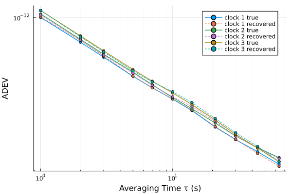

Three-cornered hat: separating individual clock noises from pairwise comparisons
A comparison of two clocks measures the sum of their noises. With three clocks and the three pairwise difference records, each clock's own noise can be recovered, provided the three noises are independent: the pairwise Allan variances obey
\[\sigma^2_{ij}(\tau) = \sigma^2_i(\tau) + \sigma^2_j(\tau),\]
three equations in three unknowns, so for example $\sigma^2_1 = \tfrac{1}{2}(\sigma^2_{12} + \sigma^2_{13} - \sigma^2_{23})$. nch solves this system, and its N-clock generalization, from the pairwise StabilityResults. Because the inputs are synthesized here, the recovery can be checked against each clock's true σ_y(τ).
using SigmaTau
using RandomThree independent clocks
White-FM clocks of similar grade (the classical hat is well conditioned only when no single clock dominates), from independent random streams:
N = 8192
τ₀ = 1.0
m_values = unique(round.(Int, exp10.(range(0, log10(N ÷ 128); length = 12))))
clock(σ₁, seed) = noise_gen(PhaseData, N, τ₀; sigma1 = Dict(0 => σ₁), rng = Xoshiro(seed)).x
x1 = clock(1.00e-12, 51)
x2 = clock(1.05e-12, 152)
x3 = clock(1.10e-12, 253)8192-element Vector{Float64}:
-4.123278839378109e-13
9.951862358750479e-13
7.903918820775419e-13
1.479059332931723e-12
2.2555169242101115e-12
3.0694074818026276e-12
3.2408385513378408e-12
2.6228370347906362e-12
2.5154078056944713e-12
4.364267424674176e-12
⋮
-9.943288674684317e-13
-3.315200180806586e-13
-3.7311592340663345e-13
-1.6726488196980104e-13
-1.600015346485089e-13
1.259069849863303e-12
3.772978996310081e-13
-3.728698736791906e-13
-3.4331226595218434e-26Pairwise comparisons
What a lab actually measures is the three differences. ci = false because the hat has no confidence model of its own; it works on the point estimates.
r12 = adev(PhaseData(x1 .- x2, τ₀), m_values; ci = false)
r23 = adev(PhaseData(x2 .- x3, τ₀), m_values; ci = false)
r31 = adev(PhaseData(x3 .- x1, τ₀), m_values; ci = false)StabilityResult(:adev, 11 pts, τ∈[1, 64] s, no CI)
tau dev neff
1 1.494e-12 8190
2 1.058e-12 8188
3 8.574e-13 8186
5 6.557e-13 8182
7 5.607e-13 8178
10 4.862e-13 8172
14 4.175e-13 8164
21 3.342e-13 8150
30 2.772e-13 8132
44 2.289e-13 8104
64 1.886e-13 8064Separation
nch takes the pairs in cyclic order A−B, B−C, C−A (the sign of each difference is irrelevant) and returns one result per clock. A τ where the inversion goes negative is reported as NaN: an invalid estimate, and the usual sign that the independence assumption is failing.
clock1, clock2, clock3 = nch(r12, r23, r31)3-element Vector{StabilityResult}:
StabilityResult(:adev, 11 pts, τ∈[1, 64] s, no CI)
StabilityResult(:adev, 11 pts, τ∈[1, 64] s, no CI)
StabilityResult(:adev, 11 pts, τ∈[1, 64] s, no CI)Check against the truth
truth1 = adev(PhaseData(x1, τ₀), m_values; ci = false)
truth2 = adev(PhaseData(x2, τ₀), m_values; ci = false)
truth3 = adev(PhaseData(x3, τ₀), m_values; ci = false)
println("τ (s) recovered/true clock 1 clock 2 clock 3")
for i in (1, length(m_values) ÷ 2, length(m_values))
println(lpad(round(Int, clock1.tau[i]), 5), " ",
join((rpad(round(c.dev[i] / t.dev[i]; digits = 3), 10)
for (c, t) in ((clock1, truth1), (clock2, truth2), (clock3, truth3)))))
endτ (s) recovered/true clock 1 clock 2 clock 3
1 1.008 0.987 1.002
7 0.998 0.992 0.992
64 0.971 0.989 1.005Ratios scatter around 1 and the scatter grows with τ, as the number of independent differences N − 2m shrinks. A longer record, or a fourth clock to overdetermine the system, tightens it.
using Plots
p = plot(truth1; label = "clock 1 true", ylabel = "σ_y(τ)", legend = :topright, lw = 1.5)
plot!(p, clock1; label = "clock 1 recovered", ls = :dash)
plot!(p, truth2; label = "clock 2 true", lw = 1.5)
plot!(p, clock2; label = "clock 2 recovered", ls = :dash)
plot!(p, truth3; label = "clock 3 true", lw = 1.5)
plot!(p, clock3; label = "clock 3 recovered", ls = :dash)
When it breaks
Correlated noise (a shared reference, common temperature or supply coupling) biases the separation and tends to show up as negative variances at specific τ. One clock much noisier than the others makes the two quiet recoveries ill-conditioned. Both are diagnosed the same way: add a fourth, independent clock and check that each clock's recovered σ is invariant to the choice of triplet. For N > 3 clocks, fill an upper-triangular matrix of pairwise results and call nch(pairwise).